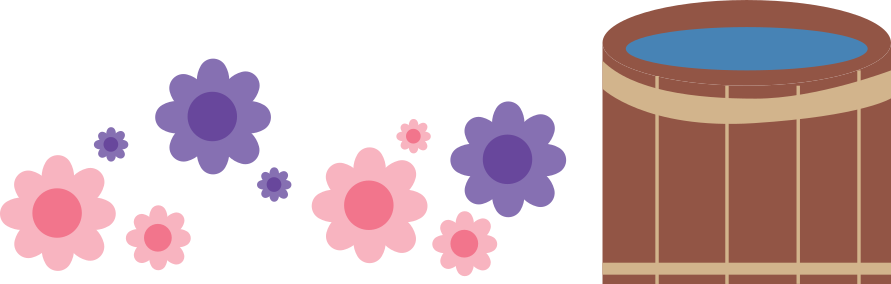

Weerproef
Weerproof is een initiatief dat samenwerkt met bewoners en experts om steden voor te bereiden op gevolgen van extreem weer.
op hun website kun je lezen over zowel oude als nieuwe projecten, wat vooral interessant is als je wilt weten wat er in jouw omgeving gebeurt.
Daarnaast bieden ze een sectie met tips om zelf duurzamer te leven. Dit trok mijn aandacht, omdat het vaak moeilijk en tijdrovend kan zijn om uit te zoeken hoe je duurzamer kunt leven.
Weerproof maakt dit proces eenvoudiger door makkelijke en bruikbare informatie te geven die je direct kunt toepassen om een duurzamer leven te leiden.
